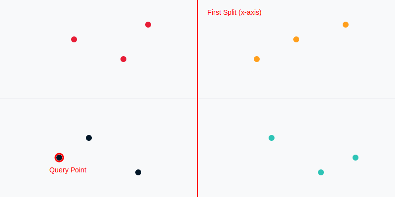
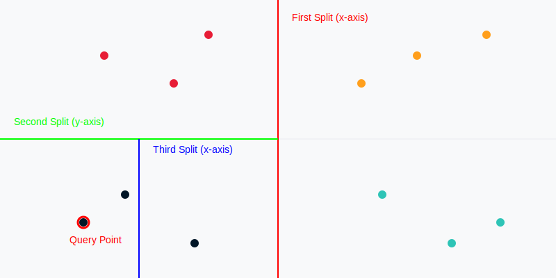
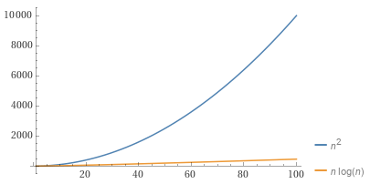
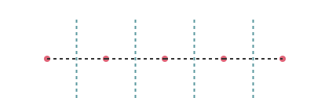

## 10万個の点から ## 一番近い点を見つける #### 〜KD treeを例とした効率的なアルゴリズムの設計〜 <div class="container"> <div class="col-left" data-markdown> <img src="assets/images/kd-tree-title.svg" alt="KD tree" height="450px"> </div> <div class="col-right" data-markdown> <img src="assets/images/binary-search-tree.svg" alt="binary-search-tree"> </div> </div> --- ### 📝自己紹介😊 <div class="profile-container"> <div class="profile-left" data-markdown> * さめ(meg-ssk) * 🧑💻 フリーランスのソフトウェアエンジニア * 得意分野: * 📸 コンピュータビジョン (画像認識/点群処理) * 🌍 空間情報処理 (GIS/リモートセンシング) * ☁️ クラウドインフラ設計/IaC (AWS) * GitHub: [s-sasaki-earthsea-wizard](https://github.com/s-sasaki-earthsea-wizard) * Speaker Deck: [syotasasaki593876](https://speakerdeck.com/syotasasaki593876) * LinkedIn: [syota-sasaki-878901320](https://www.linkedin.com/in/syota-sasaki-878901320/) </div> <div class="profile-right">  </div> </div> --- ### 問題提起: 一番近い点はどれ？ <div class="container"> <div class="col-box-left" data-markdown> * 平面上に4つの点があります (A, B, C, D) * 点Aに一番近いのはどの点でしょう？ * 点Bに一番近いのはどの点でしょう？ * 点Cに一番近いのはどの点でしょう？ * 点Dに一番近いのはどの点でしょう？ * **すべての点の一番近い点を計算するには？** </div> <div class="col-right" data-markdown> <img src="assets/images/xy-plane-with-4points.svg" alt="4 points on XY plane" width="600px"/> </div> </div> --- ### 📏 シンプルな解き方 <div class="container"> <div class="col-box-left" data-markdown> ##### 点Aに一番近い点を探す * AB, AC, ADの長さ(ノルム)を計算する * 言うなれば「定規で長さを測る」 * あとはこの中の最小値を選べばOK！ $$ \min(||AB||, ||AC||, ||AD||)$$ **合計3回の計算で解決！** </div> <div class="col-right" data-markdown> <img src="assets/images/xy-plane-with-4points-nearest-pointA.svg" alt="4 points on XY plane with norms" width="600px"/> </div> </div> --- ### 🔁📏 長さを測ることを繰り返す <div class="container"> <div class="col-box-left" data-markdown> ##### 点Bに一番近い点を探す * BC, BDの長さを計算する * BAの長さはすでに計算済み <img src="assets/images/xy-plane-with-4points-nearest-pointB.svg" alt="4 points on XY plane with norms" width="200px"/> **合計2回の計算で解決！** </div> <div class="col-box-right" data-markdown> ##### 点Cに一番近い点を探す * CDの長さを計算する * CA, CBの長さはすでに計算済み <img src="assets/images/xy-plane-with-4points-nearest-pointC.svg" alt="4 points on XY plane with norms" width="200px"/> **合計1回の計算で解決！** </div> </div> <div class="highlight-box" data-markdown> * 3回 + 2回 + 1回 = **6回の計算で解決！** * なんだ簡単じゃん！めでたしめでたし！ **...ではない！** </div> --- ### 💥計算量の爆発 点の数が10万個になったら？ <div class="simple-box" data-markdown> * 点Aに一番近い点を計算するためには99,999回の計算が必要 * 点Bに一番近い点を計算するためには99,998回の計算が必要 * (以下略...) * 合計約50億回の計算が必要！ </div> <div class="highlight-box" data-markdown> * 💥 計算量が爆発する！ * ❌💻 現実的な時間、計算リソースでは計算不可能！ * ❌🕰️ リアルタイムでの計算は不可能！ * 🤔 もっと賢く計算できないかな？ </div> --- ### ⁉️😮 突然ですがクイズです！ <div class="simple-box"> * 4本のワインがあります 🍷🍷🍷🍷 * その中に毒入りワインが1本あります 🍷☠️ * 飲んでから1日後に毒の効果が現れます 🍷🤮 * **毒入りワインを見つけるためには何人の毒見係が必要?** </div> <div class="highlight-box" data-markdown> * 🧑🤝🧑👭 **4人以下の毒見係で毒入りワインを見つける方法があります!** * 🙋 有名なクイズなので、答えを知ってる人は手を挙げてください! </div> --- ### 👩🏼 答え: 2人 👨🏾🦲 * 👩🏼アリスと👨🏾🦲ボブの2人が毒見係をします * 以下の左の表のように2人がワインを飲みます <br> <br> <div class="container"> <div class="col-box-left" data-markdown> <table> <tr> <th></th> <th>👩🏼</th> <th>👨🏾🦲</th> </tr> <tr> <td>🍷1</td> <td>⭕️</td> <td>⭕️</td> </tr> <tr> <td>🍷2</td> <td>⭕️</td> <td>❌</td> </tr> <tr> <td>🍷3</td> <td>❌</td> <td>⭕️</td> </tr> <tr> <td>🍷4</td> <td>❌</td> <td>❌</td> </tr> </table> </div> <div class="col-box-right" data-markdown> 1日後... * 👩🏼☠️ かつ 👨🏾🦲☠️ → 🍷1 が ☠️ * 👩🏼☠️ かつ 👨🏾🦲✅ → 🍷2 が ☠️ * 👩🏼✅ かつ 👨🏾🦲☠️ → 🍷3 が ☠️ * 👩🏼✅ かつ 👨🏾🦲✅ → 🍷4 が ☠️ </div> </div> --- ### ワインが8本に増えたら？🍷 x 8 **3人の毒見係(👩🏼👨🏾🦲👨🏼🦰)で毒ワイン🍷☠️を特定できる** <div class="container"> <div class="col-box-left" data-markdown> <table> <tr> <th></th> <th>👩🏼</th> <th>👨🏾🦲</th> <th>👨🏼🦰</th> </tr> <tr> <td>🍷1</td> <td>⭕️</td> <td>⭕️</td> <td>⭕️</td> </tr> <tr> <td>🍷2</td> <td>⭕️</td> <td>⭕️</td> <td>❌</td> </tr> <tr> <td>🍷3</td> <td>⭕️</td> <td>❌</td> <td>⭕️</td> </tr> <tr> <td>🍷4</td> <td>⭕️</td> <td>❌</td> <td>❌</td> </tr> <tr> <td>🍷5</td> <td>❌</td> <td>⭕️</td> <td>⭕️</td> </tr> <tr> <td>🍷6</td> <td>❌</td> <td>⭕️</td> <td>❌</td> </tr> <tr> <td>🍷7</td> <td>❌</td> <td>❌</td> <td>⭕️</td> </tr> <tr> <td>🍷8</td> <td>❌</td> <td>❌</td> <td>❌</td> </tr> </table> </div> <div class="col-box-right" data-markdown> * まったく同じ方法で: * 16本のワイン🍷x16 * 4人の毒味係で毒ワイン🍷☠️を発見可能 * 32本のワイン🍷x32 * 5人の毒味係で毒ワイン🍷☠️を発見可能 * 🤔 10万本の🍷があったら？ </div> </div> --- ### *n*人の毒見係がいれば ### 2<sup>*n*</sup>本のワインを毒見できる * 組み合わせの工夫で*n*人の毒見係がいれば2<sup>*n*</sup>本のワインから1本の毒入りワインを発見できる * 10万本のワインがあっても、17人の毒見係がいれば1本の毒入りワインを発見できる！ **2<sup>17</sup> = 131072 > 100000** <div class="highlight-box"> * 少ない人数で多くのワインを毒見できる! * 効率的な毒見係の配置が重要! * **🤔これを応用して、10万個の点の中から一番近い点を探す方法はないかな？** </div> --- ### 効率化の鍵: KD Tree🌳✂️🌿 <div class="simple-box" data-markdown> * *x*軸に平行な線で空間を分割！ * **1回の分割でおおまかに候補を半分に絞り込める！** </div>  <div class="highlight-box" data-markdown> * 🤔 この分割を繰り返したらどうなる？ * 💡 候補がどんどん減って、より効率的な探索ができそう！ </div> --- ### 分割のチカラ <div class="container"> <div class="col-box-left" data-markdown> * **全探索**: - 4点から最近傍ペアを求める場合、すべての組み合わせ（6通り）の距離計算が必要 </div> <div class="col-box-right" data-markdown> * **KD-treeでの探索 (理想的なケース)**: * 軸方向に沿った分割で探索候補を大幅に減らせる * 全探索よりずっと少ない計算で最近接ペアを見つけられる </div> </div>  <div class="highlight-box" data-markdown> * この図では「調べなくてもいい領域」がわかった! </div> --- ### ➖ 引き算型 vs ➗ 割り算型 <div class="container"> <div class="col-box-left" data-markdown> * **引き算型(線形探索)**: * 1回の計算で「候補を1つずつ」しか減らせない * 10万個の候補点があれば10万回もチェックを繰り返す * すべてのペアを計算: * 10万x10万/2 = 約50億回の計算😨 </div> <div class="col-box-right" data-markdown> * **割り算型(KD-Treeでの探索)**: * 1回の分割で候補を約半分に減らせる * 10万個が1回で約5万個、2回で約2万5千個… * わずか17回で探索終了✅ * すべてのペアを計算: * 10万+10万/2+10万/4+10万/8+ ... = 約20万回の計算😊 </div> </div> <div class="highlight-box" data-markdown> * 候補が引き算で減る vs 候補が割り算で減る * 分割を繰り返すほど、探索範囲が爆発的に縮む (**理想的には!**) * **割り算で減らしていく方が圧倒的に速い** </div> --- ### 計算量と Big-O 記号 <div class="container"> <div class="col-box-left" data-markdown> * **全探索**: * *n*個の点がある場合、すべてのペア(*n*×*n*)を調べるから *O*(*n*<sup>2</sup>) * ここで *O*(...) は*n*に対する計算量の増え方の目安 (Big-O 記号) </div> <div class="col-box-right" data-markdown> * **KD-Tree(理想的な場合)**: - 分割を重ねて候補を絞るから、平均的に *O*( *n* log *n*) - *n*が大きくなっても、全探索よりずっと速くなる </div> </div>  --- ### ☐ 平面から空間へ 🗳️ * KD-Treeは、*R<sup>2</sup>*(2次元)だけでなく、 *R<sup>3</sup>*(3次元)にも拡張可能 * 分割する平面を交互に変えながら、3次元空間を効率的に絞り込む * 3次元: * *y-z*平面 → *z-x*平面 → *x-y*平面 → *y-z*平面 → ... でサイクリックに平面で分割 <div class="highlight-box" data-markdown> * 3Dデータの解析などで威力を発揮！ * 筆者は普段のお仕事でよく使ってます！ </div> --- ### さらなる高次元へ 🚀 <div class="simple-box" data-markdown> * KD-treeは*R<sup>d</sup>*(*d*次元)にも拡張可能！ * 超平面*H<sub>0</sub>* → *H<sub>1</sub>* → ... → *H<sub>d</sub>* → *H<sub>0</sub>* → ... で分割 </div> $$ H_0: \begin{pmatrix} \mathbf{x}^1, \mathbf{x}^2, ..., \mathbf{x}^d\end{pmatrix} $$ $$ H_1: \begin{pmatrix} \mathbf{x}^0, \mathbf{x}^2, ..., \mathbf{x}^d\end{pmatrix} $$ $$\vdots$$ $$ H_d: \begin{pmatrix} \mathbf{x}^0, \mathbf{x}^1, ..., \mathbf{x}^{d-1}\end{pmatrix} $$ <div class="highlight-box" data-markdown> * **高次元空間の探索でこそ、KD-Treeの真価が発揮される!** </div> --- ### 🌳😣 KD-treeが苦手な場面 * 一直線に並んだ点 -・-・-・-・- * 全探索と同じ *O*(*n*<sup>2</sup>) の計算量に * 📈 現実の3Dデータでは局所的に点が一直線に並ぶことは**十分あり得る** * 🏢ビル、🛣️道路、🏞️堤防、などの人工構造物  <div class="highlight-box" data-markdown> * 横方向の分割に意味がない！縦方向の分割だけでは全探索と同じ！ * 対策: 軸を回転させる、ランダムな分割をする、など </div> --- ### 🌳🔍 KD-treeの応用例 <div class="col" data-markdown> 1. **点群データ解析** * 3DスキャンやLiDARデータの効率的な解析 * 点群の間引き、ノイズ除去 2. **特徴量ベクトルの類似度** * 趣味や好みの近いユーザーの探索 * 画像の類似度計算 3. **Hausdorff距離の計算** * 機械学習モデルのトレーニングの損失関数 * 物体の形状比較 </div> --- ### アルゴリズムの現実的な使い方 <div class="container"> <div class="col-box-left" data-markdown> * 😮💨**新しいアルゴリズムを作るのは本当に大変** * 正しさの証明 * 性能の評価 * アイディアの独自性 * **そもそも新しいアルゴリズムを開発すれば自分の名前がつくレベルの難しさ！** * エドガー・ダイクストラの"ダイクストラ法" * カジミェシュ・クラワトスキの"クラワトスキ定理" * ティム・ピーターズの"ティムソート" </div> <div class="col-box-right" data-markdown> - ✨**既存のアルゴリズムの宝庫を活用しよう** * 数学、物理、電気電子工学...様々な分野で培われた知恵 * KD-treeも計算幾何学の分野から生まれた * 現在の応用例は開発者も想定してなかったはず！ * 自分の課題に使えるアルゴリズムがあるはず！ </div> --- ### 🎁 現代のエンジニアの強み - **充実したライブラリ** * scikit-learn: `sklearn.neighbors.KDTree` * SciPy: `scipy.sparse.csgraph.dijkstra` * OpenCV: `cv2.FlannBasedMatcher` - **実装済みの高品質なコード** * テスト済み * 多くのユーザーによるフィードバック * ドキュメントが豊富 --- ### 🌟 まとめ: 宝物は足元にある <div class="simple-box" data-markdown> * KD-treeを例に見てきたこと: * 単純な全探索 → **賢い分割**で効率化 * 理想的な場合は**劇的な性能向上** * 最悪ケースを理解し、**対策をする** </div> <div class="highlight-box" data-markdown> * **先人の知恵を活用しよう！** * アルゴリズムの宝庫が既にそこにある * 異分野のアイディアを組み合わせる * 実装済みライブラリを有効活用 * 一緒に宝物を探しに行きましょう！ 🤝🚀🎉 </div>